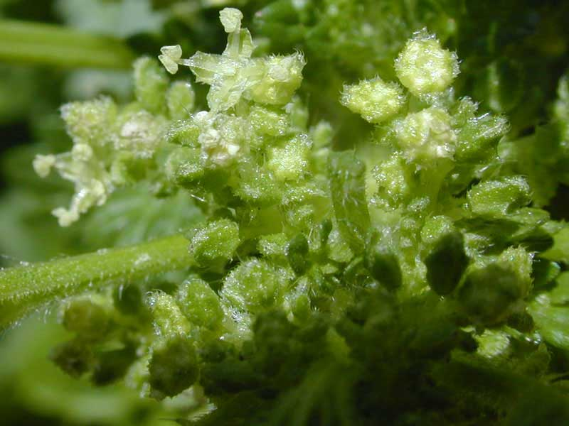
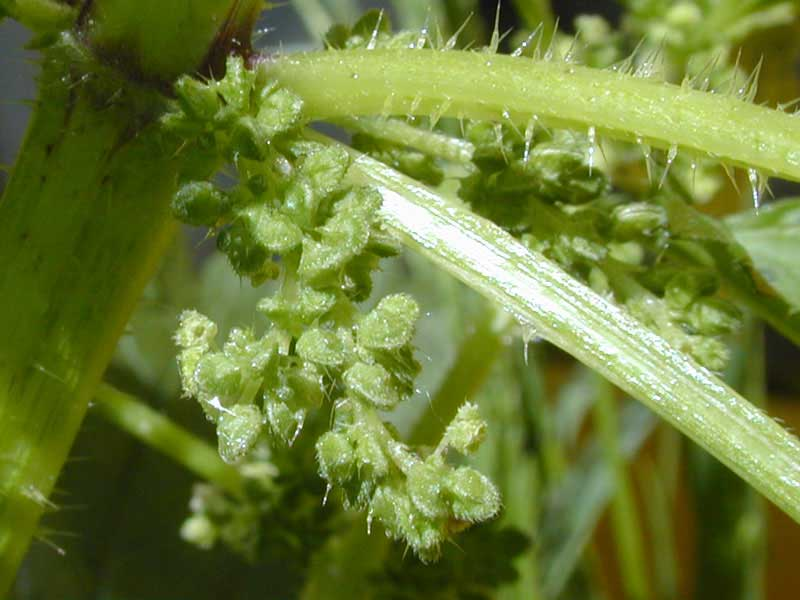
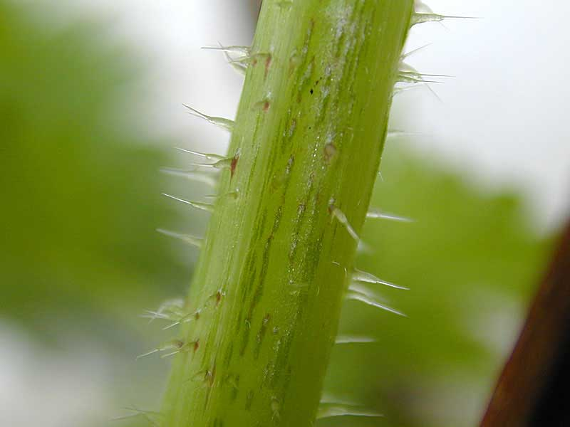

Annual nettle
Urtica urens
Other names
nettle
Description
0.3 - 1.2m tall plant (depending on situation), covered with stinging hairs. Leaves heart shaped, toothed and opposite. Flowers green, in catkins.
Similar plants
There are three naturalised and four native species of nettle in NZ. Perennial nettle and tree nettle are commonest.
Distribution
Common in cultivated ground all over.
Toxin
Histamine, 5 hydroxytryptamine and acetylcholine in the sting. U. urens has a less powerful sting than other common nettles.
Species affected
All species may be affected.
Clinical signs acute
Mild pain and irritation.
Clinical signs chronic
Post mortem signs
Very unlikely to be fatal.
Diagnosis
History
Differential diagnosis
Other causes of dermatitis.
Treatment
None necessary self limiting.
Prognosis
Good.
Prevention
References
Connor, HE, The Poisonous plants in New Zealand, 2nd ed.,1977, Government Publications Ltd., Wellington
|
|
|
flowers |
 seeds |
 stinging hairs
|
|
|